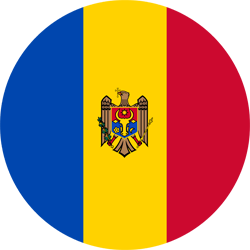

"Pe un picior de plai, pe o gura de rai..."
"Moldova este o țară mică situată în Europa de Est, între România și Ucraina. Capitala sa este Chișinău, iar limba oficială este româna. Moldova are o istorie bogată și este cunoscută pentru peisajele sale pitorești și vinurile de calitate.".
"Moldova este o republică parlamentară, unde puterea executivă este împărțită între președinte și guvern. Parlamentul unicameral este ales prin vot popular și are un rol important în formularea politicilor. În ultimii ani, Moldova a avut o direcție pro-europeană în guvernare, însă se confruntă și cu provocări politice interne și influențe externe."